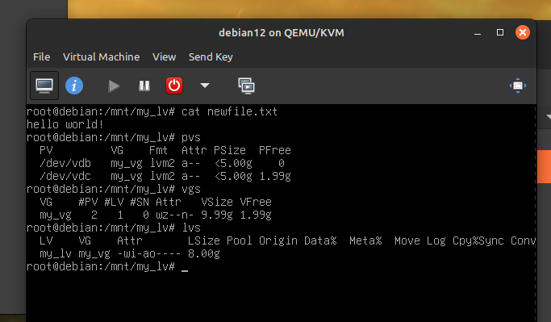

Logical Volume Management (LVM) is a method of managing storage on a Linux system. It allows for the creation of logical volumes, which can be resized and moved around without the need to unmount the filesystem. This is useful for systems that need to be up 24/7, as it allows for the resizing of filesystems without downtime. In this section, I decided to get some hands-on experience with this powerful technology using my Debian-12 virtual machine.
Most LVM related commands require root privileges, so I started by elevating to root:
su -
Now, to use LVM, I first had to install it by running the following command:
apt install lvm2
One of the main benefits of LVM is the ability to add additional hard drives to a system while it is running. To test this, I added two 5GB storage devices to my VM by clicking "show hardware details" in virt-manager, and then adding two drives in the "add hardware" section, all while my VM was running, managing ssh connections, and hosting a website. I then ran the following command to see the new drives:
lsblk
This displayed the new drives: vdb and vdc, each 5GB. A success!
Next, I created a physical volume for each of the new drives with the following commands:
pvcreate /dev/vdb pvcreate /dev/vdc
After creating the physical volumes, I created a volume group with the following command:
vgcreate my_vg /dev/vdb /dev/vdc
This created a volume group named "my_vg" that contained the two physical volumes. The volume group allows LVM to manage the two physical volumes as if they were a single device.
The final step in setting up LVM (for now) was to create a logical volume. I created a logical volume named "my_lv" that used 8GB of space from the volume group "my_vg" with this command:
lvcreate -n my_lv -L 8G my_vg
The storage was now set up! Onward to partitions!
Now that I had a logical volume, I needed to create a filesystem on it. I chose to use the ext4 filesystem, which I'd learned about in intro to linux. I remember this being harder in class, but I found a very simple command to do it:
mkfs.ext4 /dev/my_vg/my_lv
Before I could configure the new filesystem to mount at boot, I wanted to test it out manually. I created a directory to mount the filesystem to, and then mounted the filesystem with the following commands:
mkdir /mnt/my_lv mount /dev/my_vg/my_lv /mnt/my_lv
After this, I was able to navigate to the /mnt/my_lv directory and create files. Pretty nice!
Almost there! To configure the filesystem to mount at boot, I had to edit the /etc/fstab file. I used nano to add the following line to the file:
/dev/my_vg/my_lv /mnt/my_lv ext4 defaults 0 0
A reboot proved that the filesystem was being automatically mounted at boot.
By the end of this process, I was able to add two new hard drives to my Debian-12 VM, create a volume group, logical volume, and filesystem on the new drives, and configure the filesystem to mount at boot. LVM is quite a powerful tool for storage, and not too difficult to use if you know the commands.
